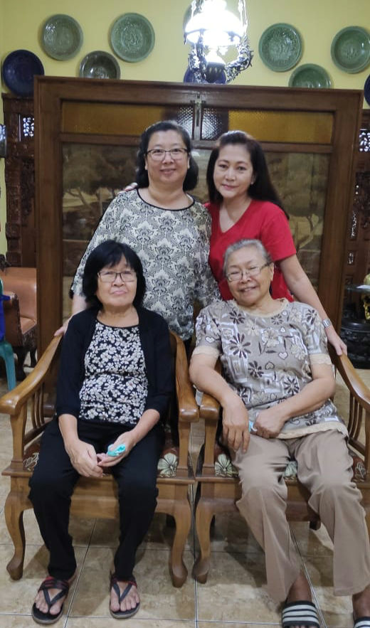
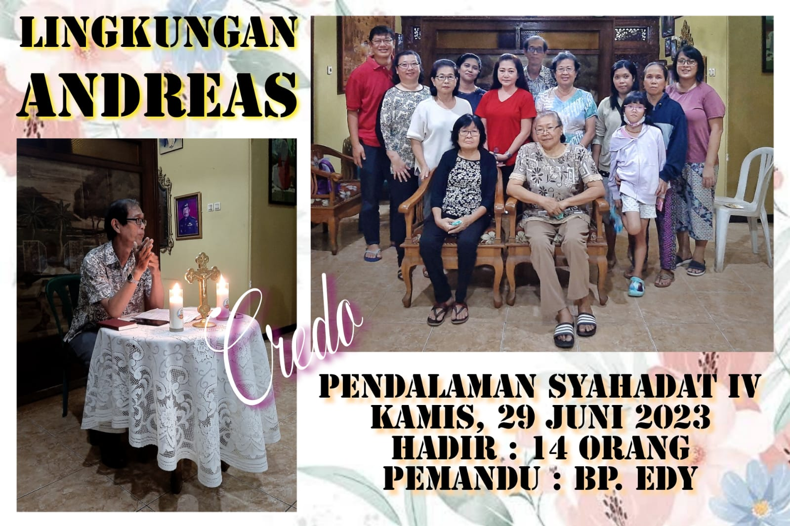
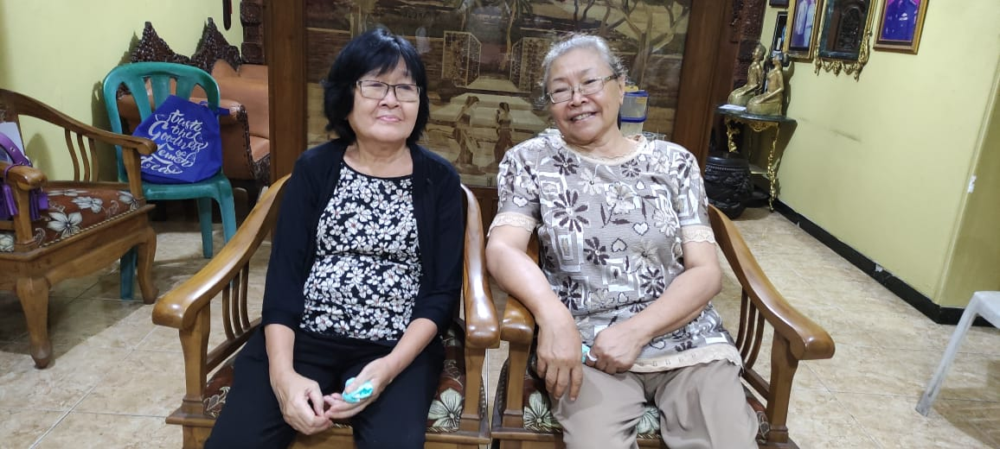

Pertemuan Kredo ke 4
|  |   |
Pertemuan Kredo ke 4 mempelajari bersama tentang pemahaman iman yang utuh akan ALLAH PUTRA sehingga kita menyatakan pengakuan iman: “Aku Percaya akan Yesus Kristus, menderita sengsara dalam pemerintahan Pontius Pilatus, Disalibkan, Wafat, dan dimakamkan, yang turun ke tempat penantian, pada hari ketiga Bangkit dari antara orang mati” dengan iman mendalam, menghayatinya dengan tangguh dan teguh, dan mewartakannya dengan utuh.
Materi Pembelajaran diambil dari bahan pendalaman Paroki Mengajar dan KKGK 112-131 Yesus Kristus menderita sengsara dalam pemerintahan Pontius Pilatus, Disalibkan, Wafat, dan dimakamkan (112-124). Yesus turun ke tempat penantian, pada hari ketiga Bangkit dari antara orang mati (125-131). KKGK lengkap
Inspirasi: Lukas 24:1-12
24:1 Pada pagi-pagi benar pada hari pertama minggu itu mereka pergi ke kubur membawa rempah-rempah yang telah disediakan mereka.
24:2 Mereka mendapati batu sudah terguling dari kubur itu,
24:3 dan setelah masuk mereka tidak menemukan mayat Tuhan Yesus.
24:4 Sementara mereka berdiri termangu-mangu karena hal itu, tiba-tiba ada dua orang berdiri dekat mereka memakai pakaian yang berkilau-kilauan.
24:5 Mereka sangat ketakutan dan menundukkan kepala, tetapi kedua orang itu berkata kepada mereka: “Mengapa kamu mencari Dia yang hidup, di antara orang mati?
24:6 Ia tidak ada di sini, Ia telah bangkit. Ingatlah apa yang dikatakan- Nya kepada kamu, ketika Ia masih di Galilea,
24:7 yaitu bahwa Anak Manusia harus diserahkan ke tangan orang-orang berdosa dan disalibkan, dan akan bangkit pada hari yang ketiga.”
24:8 Maka teringatlah mereka akan perkataan Yesus itu.
24:9 Dan setelah mereka kembali dari kubur, mereka menceriterakan semuanya itu kepada kesebelas murid dan kepada semua saudara yang lain.
24:10 Perempuan- perempuan itu ialah Maria dari Magdala, dan Yohana, dan Maria ibu Yakobus. Dan perempuan-perempuan lain juga yang bersama-sama dengan mereka memberitahukannya kepada rasul-rasul.
24:11 Tetapi bagi mereka perkataan- perkataan itu seakan-akan omong kosong dan mereka tidak percaya kepada perempuan-perempuan itu.
24:12 Sungguhpun demikian Petrus bangun, lalu cepat- cepat pergi ke kubur itu. Ketika ia menjenguk ke dalam, ia melihat hanya kain kapan saja. Lalu ia pergi, dan ia bertanya dalam hatinya apa yang kiranya telah terjadi.
KKGK 112 Apa arti penting Misteri Paskah Yesus?
Misteri Paskah Yesus, yang meliputi sengsara, wafat, kebangkitan, dan pemuliaan-Nya, merupakan pusat iman Kristen karena rencana Allah untuk menyelamatkan dunia telah terlaksana satu kali untuk selamanya melalui wafat Putra-Nya, Yesus Kristus.
Yesus dituduh beberapa pemimpin Israel dengan tuduhan melawan hukum, kanisah, dan iman akan satu Allah. Padahal, Yesus justru menggenapi Hukum Taurat melalui kematian-Nya. Yesus pun menghormati kanisah sebagai “rumah Bapa-Ku”. Yesus juga tidak menolak iman akan satu Allah. Yesus meneguhkan bahwa “Allah kita itu esa” (Mrk 12:29). Namun, toh Yesus tetap dihukum mati. Penyebab derita dan kematian-Nya, tidak dapat ditimpakan kepada orang Yahudi dan keturunannya. Sebaliknya, setiap pendosa, yaitu setiap manusia, betul- betul merupakan sebab dan alasan penderitaan Sang Penebus, dan kesalahan lebih besar dalam hal ini jatuh kepada mereka, terutama pengikut Kristus, yang semakin sering jatuh ke dalam dosa atau yang merasa senang akan keburukan dosa. Yesus menyerahkan seluruh Diri-Nya kepada Bapa untuk melaksanakan rencana penyelamatan- Nya. Dia memberikan “nyawanya menjadi tebusan bagi banyak orang” (Mrk 10:45). Dengan ini, Yesus mendamaikan seluruh umat manusia dengan Allah.
Secara bebas, Yesus menyerahkan hidup-Nya sebagai kurban silih, yaitu bahwa Dia telah memulihkan kita dari dosa-dosa kita dengan ketaatan penuh cinta sampai mati. Cinta Sang Putra Allah “sampai pada kesudahannya” (Yoh 13:1) ini mendamaikan kembali seluruh umat manusia dengan Bapa. Karena itu, kurban Paskah Kristus menebus umat manusia dengan cara yang unik, sempurna, dan definitif, dan membuka persekutuan dengan Allah.
Pembaharuan Iman
Iman menuntun kehidupan kita. Untuk dapat hidup baik, maka seseorang harus mengetahui bagaimana untuk hidup dengan baik. Cara untuk hidup baik tidak dapat dicari sendiri oleh setiap individu, karena untuk mencapainya diperlukan waktu yang lama dan dapat salah. Dikatakan “Orang yang benar itu akan hidup oleh percayanya (imannya).” (Hab 2:4)